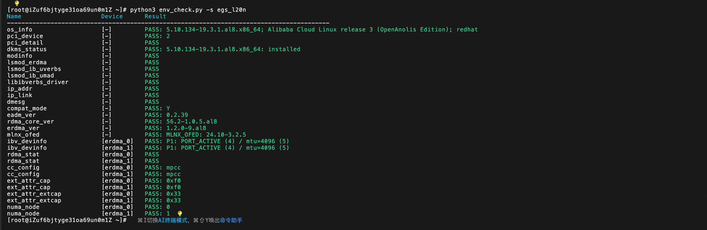
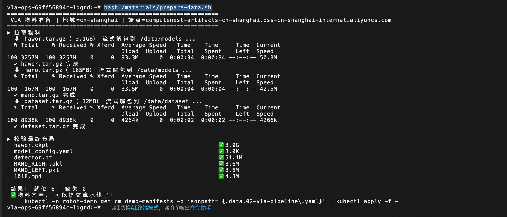
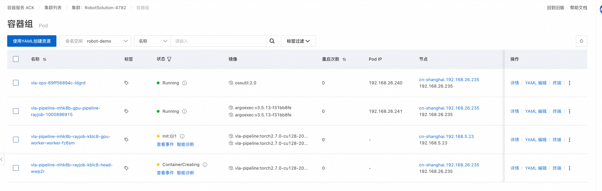
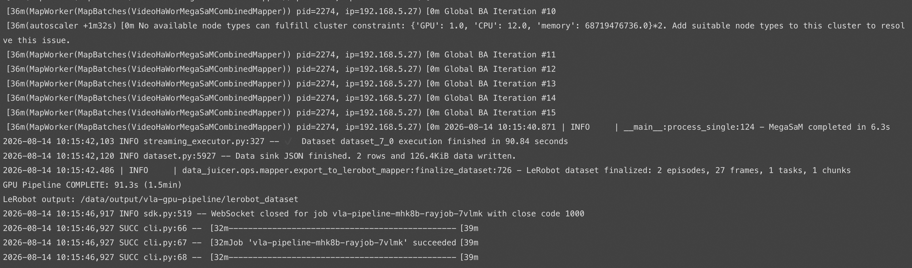
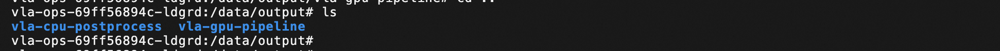

机器人（VLA）数据处理解决方案 · 使用文档
本服务基于阿里云 ROS 模板一键交付一套「具身智能数据加工」环境：ACK 托管 Pro 集群 + L20N eRDMA GPU 节点池 + OSS/NAS 存储 + Argo Workflows + KubeRay + Fluid，并内置 data-juicer VLA 流水线 Demo（第一人称手部视频 → LeRobot v2.0 训练数据集）。
一、服务部署了什么
1.1 集群与组件清单
| 类别 | 组件 | 版本 / 说明 | 安装方式 |
|---|---|---|---|
| 集群 | ACK 托管 Pro | ack.pro.small，Terway-ENIIP，ProxyMode ipvs，公网 API 入口开启 |
ALIYUN::CS::ManagedKubernetesCluster |
| Ray | kuberay-operator | ACK 托管组件（operator 跑在管控面，集群内看不到 Deployment，就绪信号看 rayjobs.ray.io CRD） |
ALIYUN::CS::ClusterAddons |
| eRDMA | ack-erdma-controller | Config：preferDriver=ofed、allocateAllDevices=true |
ALIYUN::CS::ClusterAddons |
| 工作流 | ack-workflow（Argo Workflows） | 3.5.15，镜像走 ACK 地域 VPC 仓库 | ALIYUN::CS::ClusterAddons |
| 数据加速 | ack-fluid | 通过 MODULE::ACS::ComputeNest::FluxOciHelmDeploy 安装到 fluid-system，values 传 region + pullImageByVPCNetwork=true（必须用 ACK 版 chart，社区版含 Helm lookup 会解析失败） |
Helm(OCI) |
| GPU 驱动 | NVIDIA 580.126.09 | 由节点标签 ack.aliyun.com/nvidia-driver-version 固定（L20N + eRDMA 官方要求） |
节点池标签 |
| eRDMA 驱动 | erdma_installer 1.5.9 | 节点 UserData 从 mirrors.cloud.aliyuncs.com/erdma 升级；≥1.5.9 默认启用 MPCC 拥塞算法 |
节点 UserData |
1.2 两个节点池
| 节点池 | 名称 | 规格 | 盘 | 标签 / 污点 | 用途 |
|---|---|---|---|---|---|
| 管控 | sys-pool |
ecs.u1-c1m4.xlarge（默认，4C16G，可选 4 种 u1）×≥2，跨主/次可用区打散 |
系统盘 200G ESSD | robot-solution.aliyun.com/node-role=system |
承载 Argo / KubeRay / Fluid / CSI，不跑 GPU 负载 |
| GPU | gpu-pool |
ecs.ebmgn9g.64xlarge（默认，256C/2304G/8×L20N 48G），另可选 ebmgn9gc.64xlarge、ebmgn9ge.64xlarge；数量 0~16，默认 1，全部落主可用区 |
系统盘 500G ESSD | 标签 robot-solution.aliyun.com/node-role=gpu；污点 nvidia.com/gpu=true:NoSchedule |
eRDMA + GPU 算力，Demo 与流水线跑在这里 |
⚠️ L20N 裸金属当前全地域售罄、弹性配额默认为 0，部署前必须先申请 L20N 配额/白名单，否则栈会以
InstanceTypeNoStock或QuotaExceed失败。
1.3 创建的云资源与集群内对象
云资源（VPC/存储/RAM）
| 资源 | 说明 |
|---|---|
| VPC + 2 台交换机 | 选「新建专有网络」时由 MODULE::ACS::ComputeNest::VpcAndVSwitch 创建（默认 VPC 192.168.0.0/16，主/次交换机 192.168.0.0/20、192.168.16.0/20）；选「已有」则复用你填的 ID。交换机同时承载节点与 Terway Pod IP，建议 /20 及以上 |
| OSS Bucket | 作用：输入层——dataset/ 存源视频、models/ 存模型权重，分别以 robot-dataset、robot-models 两个 PVC 挂进运维控制台与流水线 Pod 的 /data/dataset、/data/models（ossfs，适合大文件顺序读；备料时也靠它写入 3.1GB 级的权重）。选「新建Bucket」时自动创建 robot-data-<StackId 前 8 位>（private / LRS / Standard，DeletionForce: true）；并预建 dataset/ 与 models/ 两个前缀（ossfs 挂子目录时目录不存在会挂载失败） |
| RAM 用户 + AccessKey | 作用：供 CSI 挂载 OSS 与备料脚本访问 Bucket，以 Secret oss-secret 形式存在 robot-demo 命名空间。选「自动创建 AccessKey」时创建，权限仅限该 Bucket 的 oss:*；也可改为自备 AK（模板会展示所需策略 JSON） |
| NAS 文件系统 + 挂载点 | 作用：输出层——以 robot-output PVC 挂到 /data/output，存流水线中间结果（frames/、moge_arrays/、megasam_arrays/、*.json、lerobot_dataset/）与最终数据集 lerobot_dataset_smoothed/。这里必须用 NAS 而不是 OSS：这一段是频繁写小文件，ossfs 的写性能与 POSIX 语义不足；同时需 RWX 供 Ray head/worker/后处理 Pod 跨节点共挂。通用型 NFS、按量付费， Performance/Capacity 二选一；挂载点落 VPC 主交换机（不指定 ZoneId，由 NAS 自选支持的可用区，避免 InvaildZone.NotExist）。单价约为 OSS 的 3 倍，产物建议归档回 OSS 后清理 |
1.4 部署输出（Outputs）
| 输出项 | 内容 |
|---|---|
ClusterId / ClusterConsoleUrl |
ACK 集群 ID 与控制台地址 |
OssBucketName |
本实例使用的 Bucket |
Step1PrepareMaterials |
备料命令（见 3.1） |
OssBucketForYourOwnData |
上传自有视频的 aliyun oss cp 命令 |
Step2SubmitDemoB |
VLA 流水线的提交命令（见 3.2） |
二、eRDMA 校验方式
登录 GPU 节点池下的任一 GPU 节点，拉取并执行官方体检脚本：
wget http://mirrors.cloud.aliyuncs.com/erdma/tools/env_check.py
python3 env_check.py -s egs_l20n
校验项全部为 PASS 即说明 eRDMA 已安装并配置正常。

三、data-juicer 示例（VLA 流水线）
3.0 Demo 概览
命名空间 robot-demo 下有一个名为 vla-ops 的 Deployment（运维控制台），本示例的备料与提交操作都在它里完成。
3.1 第 1 步：备料
物料均来自计算巢公开制品库，无需自备：
| 包 | 大小 | 解压根目录 | 内容 |
|---|---|---|---|
hawor.tar.gz |
3.1 GB | /data/models |
HaWoR 权重 / 配置 / 检测器 |
mano.tar.gz |
165 MB | /data/models |
MANO 左右手模型 |
dataset.tar.gz |
12 MB | /data/dataset |
两段测试视频 |
在 vla-ops 容器内执行下面的命令完成上述物料的下载与校验：
bash /materials/prepare-data.sh

3.2 第 2 步：提交两阶段流水线
同样在 vla-ops 容器内提交流水线：
kubectl create -f /demo-manifests/02-vla-argo-workflow.yaml
提交后可以看到 RayJob 以及 Ray head / Ray worker 已被创建出来，等待其进入运行状态即可。

流水线日志从 submitter Pod（形如 vla-pipeline-mhk8b-rayjob-j6jgp）中查看：
kubectl -n robot-demo logs -f <workflow-name>-rayjob-xxxxx

待所有 Pod 均变为 Completed 状态后，回到 vla-ops 容器内即可查看产出结果：

3.3 小结
vla-ops 容器内挂载的关键目录如下：
| 路径 | 作用 |
|---|---|
/data/models |
模型权重（HaWoR、MANO） |
/data/dataset |
输入视频 |
/data/output |
流水线产物 |
/demo-manifests/02-vla-argo-workflow.yaml |
提交用的流水线 YAML |
/scripts |
流水线调用的 Python 脚本 |
想换成自己的视频，只需替换 /data/dataset 下的视频文件；想调整处理逻辑，修改流水线 YAML 与 /scripts 下的 Python 脚本即可。